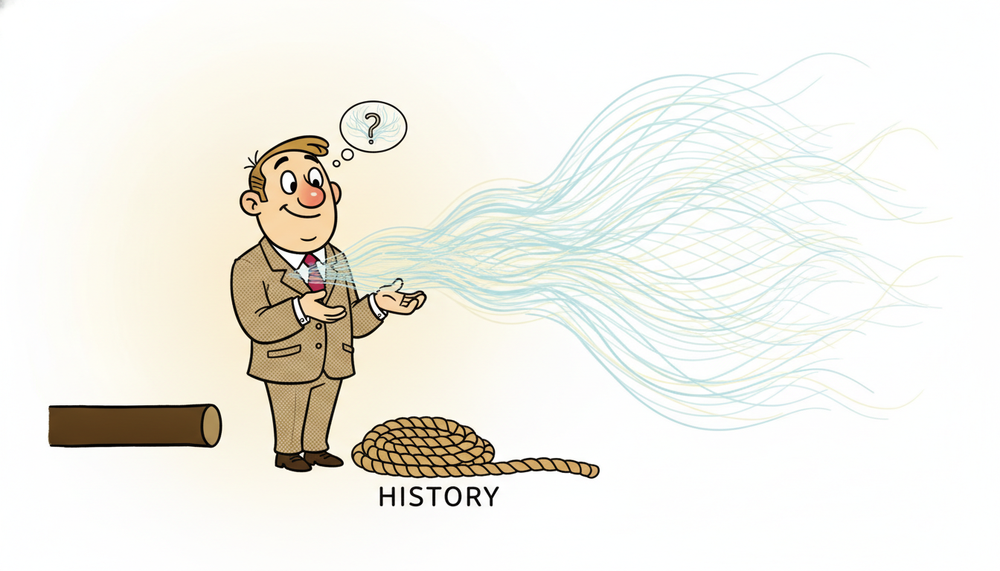

"They asked me for tomorrow's number and I refused to give just one. Instead I drew a hundred tomorrows: a calm one, a spiked one, three that quietly fail, a long tail of disasters nobody wants to fund inventory for. Then I shrugged and said, the truth was never a number. It was a shape, and here is its weight."
A DeepAR Decoder Sampling a Hundred Possible Tomorrows
Every forecaster you have built so far answers the question "what is the most likely next value?" with a single number. That single number is almost never the quantity a decision actually needs. An inventory planner does not want the expected demand; they want the ninetieth percentile so the shelf is not empty one day in ten. A risk desk does not want the expected loss; they want the tail. DeepAR (Salinas, Flunkert, and Gasthaus, 2020) reframes neural forecasting around this fact: instead of regressing a point, an autoregressive RNN emits, at every step, the parameters of a probability distribution over the next value, and is trained to make the observed data as likely as possible under that distribution by minimizing the negative log-likelihood. A trained DeepAR produces a forecast not as a line but as a cloud: roll the recurrence forward, at each step sample a value from the predicted distribution, feed that sample back as the next input, and repeat, so that running the rollout many times traces out the full predictive distribution of the entire future trajectory, prediction intervals and all. Two further ideas make it work at scale: it is trained globally, one model across thousands of related series rather than one model per series, so it can borrow statistical strength and forecast items with almost no history; and it handles the wildly different magnitudes of real series by scaling. This section builds a Gaussian-head probabilistic RNN from scratch (likelihood head, NLL loss, ancestral sampling), reproduces it in a handful of lines with the GluonTS and neuralforecast DeepAR, evaluates with the quantile and CRPS losses that probabilistic forecasts demand, and leaves you able to ship calibrated intervals rather than overconfident lines.
Chapters 9 through 13 built the neural machinery of sequence modeling: the recurrent cell and backpropagation through time (Section 9.3), the gated RNNs of Chapter 10, the temporal convolutions of Chapter 11, attention in Chapter 12, and the state-space models of Chapter 13. Every one of those, as we trained it, produced a point: a single predicted value per step under a squared-error or absolute-error loss. This chapter turns that machinery toward forecasting as it is actually practiced, and the first and most consequential turn is the one this section makes. We stop predicting a number and start predicting a distribution. The recurrent backbone is unchanged; what changes is the head that sits on top of the hidden state and the loss that trains it. That single substitution, a likelihood head and a negative-log-likelihood objective in place of a linear head and a mean-squared error, converts every RNN of Part III into a probabilistic forecaster, and it is the conceptual seed of the entire uncertainty-quantification programme of Chapter 19, to which this section repeatedly looks forward. We use the unified notation of Appendix A: $z_t$ for the observed target at step $t$ (DeepAR's convention), $\mathbf{x}_t$ for covariates, $\mathbf{h}_t$ for the hidden state, $\theta_t$ for the per-step distribution parameters.
This section installs five competencies. First, to articulate why a decision needs a distribution and not a point, and what goes wrong when you hand a planner a mean. Second, to construct the DeepAR likelihood head: an RNN whose output layer emits the parameters of a chosen likelihood (Gaussian, Student-t, or negative binomial) and is trained by NLL. Third, to generate multi-step probabilistic forecasts by ancestral sampling, feeding each sampled value back into the recurrence. Fourth, to understand global training across many series, scale handling, and covariates, the three ideas that separate DeepAR from a per-series classical model. Fifth, to evaluate a probabilistic forecast honestly with quantile loss and the continuous ranked probability score. The worked example threads all five together in code.
1. From Point to Probabilistic Forecasting: Predict a Distribution, Not a Number Beginner

A point forecast collapses the future into a single number and, in doing so, throws away exactly the information a decision most needs: how uncertain that number is. Consider the difference between two forecasts that both report an expected demand of one hundred units. In the first, demand is almost certainly between ninety-five and one hundred five; in the second, it could plausibly be anywhere from twenty to one hundred eighty. A point forecast reports "one hundred" in both cases and is, in both cases, useless for the actual decision, which is how many units to stock. The first situation calls for ordering near one hundred; the second, if stockouts are costly, calls for ordering far above one hundred to buy a safety margin. The quantity that drives the order is not the mean of the future but a high quantile of it, and a point forecast does not carry quantiles.
This is the general shape of the argument, and it recurs across every domain in this book. Decisions under uncertainty are almost never functions of the expected outcome alone; they are functions of the whole distribution, usually through an asymmetric cost. Stockout cost differs from holding cost, so the optimal order is a quantile (the classic newsvendor solution, which we revisit in the decision chapters of Part VI). A capacity planner provisions for a peak, not an average, so they need an upper quantile of load. A trading desk sizes positions against a tail loss (value-at-risk is literally a quantile of the loss distribution), not against expected return. In each case the object that the decision consumes is a quantile, an interval, or an expectation of a nonlinear cost, and every one of those is a functional of the predictive distribution that a point forecast simply cannot provide. Predicting a distribution is therefore not a refinement of point forecasting for the statistically fastidious; it is the minimum the decision requires.
A point forecast answers "what is the expected next value?" but almost no real decision is a function of the expected value alone. Inventory orders are a quantile (stock so you are short only ten percent of the time); capacity is provisioned for a peak; risk is measured in the tail. All of these are functionals of the predictive distribution $p(z_{t+1} \mid \text{past})$, and a single number cannot encode them. The job of a probabilistic forecaster is to deliver that distribution, or enough of it (a set of quantiles, an interval, samples) that the downstream decision can extract what it needs. Once you see forecasting this way, the mean-squared-error point forecaster looks like a probabilistic forecaster that was forced to report only the center of mass and forbidden from mentioning the spread.
There is a second, quieter reason point forecasting under squared error is inadequate for many real series: it implicitly assumes a symmetric, constant-variance, Gaussian-shaped world, and real demand, traffic, and count data violate all three assumptions. Retail demand is a nonnegative integer that is often zero (intermittent demand), heavily right-skewed, and has a variance that grows with its mean. Squared-error regression on such data produces forecasts that can go negative, that ignore the skew, and that report a uniform uncertainty band when the true uncertainty scales with volume. The probabilistic framing fixes this at the root by letting you choose the likelihood to match the data: a negative binomial for skewed nonnegative counts, a Student-t for heavy-tailed continuous series, a Gaussian for well-behaved real values. The forecaster then learns the parameters of that correctly-shaped distribution rather than forcing a mismatched one. We forward-reference the full treatment of calibration, coverage, and conformal guarantees to Chapter 19; here the point is simply that the distribution is the deliverable.
Meteorologists have quietly been probabilistic forecasters for decades, and the public absorbed it without noticing. "Seventy percent chance of rain tomorrow" is a probabilistic forecast: it reports a distribution (a Bernoulli over rain) rather than a point ("it will rain"). Nobody finds this confusing, and nobody would accept going back to a bare yes-or-no forecast, because the probability is exactly what you need to decide whether to carry an umbrella. Demand and load forecasting spent years reporting bare numbers and only recently rediscovered what the weather service knew all along: the honest forecast, and the useful one, is the one that owns up to its own uncertainty.
2. DeepAR: An Autoregressive RNN That Outputs Likelihood Parameters Intermediate
DeepAR keeps the autoregressive recurrent backbone of Part III intact and changes only the top of the network. At each step the RNN consumes the previous observed value and the current covariates, updates its hidden state, and then, instead of emitting a single predicted value, emits the parameters of a probability distribution over the next value. Concretely, with an LSTM or GRU cell producing the hidden state $\mathbf{h}_t$, the model computes
$$\mathbf{h}_t = \mathrm{RNN}\big(\mathbf{h}_{t-1},\; [z_{t-1},\, \mathbf{x}_t]\big), \qquad \theta_t = \theta(\mathbf{h}_t),$$where $[z_{t-1}, \mathbf{x}_t]$ concatenates the previous target with the current covariates (lagged-target autoregression), and $\theta(\cdot)$ is a small affine-plus-link readout that maps the hidden state to the parameters $\theta_t$ of the chosen likelihood $p(z \mid \theta_t)$. For a Gaussian likelihood, $\theta_t = (\mu_t, \sigma_t)$, produced by
$$\mu_t = \mathbf{w}_\mu^\top \mathbf{h}_t + b_\mu, \qquad \sigma_t = \mathrm{softplus}\!\big(\mathbf{w}_\sigma^\top \mathbf{h}_t + b_\sigma\big),$$where the softplus link $\mathrm{softplus}(x) = \log(1 + e^x)$ guarantees a positive standard deviation. The mean head is unconstrained; the scale head is passed through softplus precisely so the network can never emit a negative or zero variance. This positivity-link pattern is the general recipe: every distribution parameter that must be positive (the $\sigma$ of a Gaussian, the degrees of freedom and scale of a Student-t, the dispersion of a negative binomial) is produced by passing an unconstrained linear output through a link that maps the real line to the positive half-line. Figure 14.1.1 shows the head sitting atop the recurrent backbone.
Training maximizes the likelihood of the observed sequence under the model, equivalently minimizing the negative log-likelihood (NLL). Because the model is autoregressive and conditioned on the true past during training (teacher forcing), the joint likelihood factorizes into a product of per-step likelihoods, and the loss is the sum of per-step negative log-densities:
$$\mathcal{L} = -\sum_{t} \log p\big(z_t \mid \theta_t\big) = -\sum_{t} \log p\big(z_t \mid \theta(\mathbf{h}_t)\big).$$For the Gaussian head this is the familiar Gaussian negative log-likelihood, written out per step as
$$-\log p(z_t \mid \mu_t, \sigma_t) = \frac{1}{2}\log(2\pi) + \log \sigma_t + \frac{(z_t - \mu_t)^2}{2\sigma_t^2}.$$Read this loss carefully, because its structure is the entire reason probabilistic training behaves differently from point training. The third term, $(z_t - \mu_t)^2 / (2\sigma_t^2)$, is a squared error scaled by the predicted variance: the model is rewarded for putting its mean near the target, but the reward is divided by how much variance it claimed. The second term, $\log \sigma_t$, is a penalty for claiming large variance. Together they create a tension the network must resolve: it cannot simply inflate $\sigma_t$ to make the squared-error term small, because $\log \sigma_t$ punishes that; and it cannot shrink $\sigma_t$ toward zero to minimize $\log \sigma_t$, because then the squared-error term explodes whenever the mean misses. The minimum of this tension is reached when $\sigma_t$ equals the true conditional standard deviation of the residual. This is why the Gaussian NLL does not merely fit a mean; it fits a calibrated variance, learning to report large uncertainty where the data are noisy and small uncertainty where they are predictable. A plain mean-squared-error loss is exactly this NLL with $\sigma_t$ frozen at a constant, which is why MSE forecasters cannot express heteroscedastic uncertainty.
The likelihood is a modeling choice matched to the data, and DeepAR's three canonical choices cover the common cases. The Gaussian, with parameters $(\mu, \sigma)$, suits real-valued, roughly symmetric series. The Student-t, adding a degrees-of-freedom parameter $\nu$, gives heavier tails for series with occasional large shocks (financial returns, the Chapter 5 volatility series). The negative binomial, with a mean and a dispersion parameter, is the workhorse for nonnegative integer count data (retail unit sales, web traffic), where it captures the right skew and the mean-dependent variance that a Gaussian cannot. The negative-binomial mean and the Gaussian mean are read out the same way; only the second parameter and the density formula change. Selecting the likelihood is the single most important modeling decision in DeepAR, and getting it wrong (a Gaussian on intermittent counts) produces poorly calibrated intervals no amount of training can fix.
DeepAR is not a new architecture; it is a new head and loss on the architectures of Part III. Take any recurrent backbone, replace its linear-output-plus-MSE top with a parameter-output-plus-NLL top, choose a likelihood that matches your data, and you have a probabilistic forecaster. The recurrence, the unrolling, the backpropagation through time of Section 9.3 all carry over unchanged. The $\log \sigma$ versus $(z-\mu)^2/\sigma^2$ tension in the Gaussian NLL is what makes the network learn a calibrated spread rather than just a center, and that is the whole difference between a forecast that owns its uncertainty and one that hides it.
To turn the trained one-step likelihood into a multi-step forecast, DeepAR uses ancestral sampling (also called the autoregressive rollout). During training the RNN was fed the true previous value; at prediction time, beyond the end of the observed history, there is no true value to feed, so the model feeds back a sample. Starting from the hidden state at the end of the conditioning range, it draws $\hat{z}_{t+1} \sim p(z \mid \theta_{t+1})$ from the predicted distribution, then feeds that drawn value in as the input for step $t+2$, predicts $\theta_{t+2}$, draws $\hat{z}_{t+2}$, and continues to the forecast horizon. One such rollout produces a single sampled future trajectory. Repeating the rollout many times (typically a few hundred) produces an ensemble of trajectories, and the empirical distribution of those trajectories at each future step is the model's predictive distribution: its quantiles give prediction intervals, its mean gives a point forecast if one is wanted. The sampling is "ancestral" because each step's distribution is conditioned on the actual samples drawn at all earlier steps, so the trajectories correctly capture how uncertainty compounds the further out you forecast.
Suppose at one step the model predicts a Gaussian with $\mu_t = 100$ and $\sigma_t = 10$, and the observed value turns out to be $z_t = 118$. The negative log-likelihood is $\tfrac{1}{2}\log(2\pi) + \log 10 + \frac{(118-100)^2}{2\cdot 10^2} = 0.9189 + 2.3026 + \frac{324}{200} = 0.9189 + 2.3026 + 1.62 = 4.841$. Now suppose a second, overconfident model predicted the same mean but $\sigma_t = 3$: its NLL is $0.9189 + \log 3 + \frac{324}{2\cdot 9} = 0.9189 + 1.0986 + 18.0 = 20.02$, vastly worse, because it claimed near-certainty and the truth landed six standard deviations away. A third, underconfident model with $\sigma_t = 40$ scores $0.9189 + \log 40 + \frac{324}{2\cdot 1600} = 0.9189 + 3.689 + 0.101 = 4.709$, slightly better than the first here only because this particular point was a large miss. The NLL thus rewards honest spread: across many points, the loss is minimized by the model whose $\sigma$ tracks the true residual size, neither too tight nor too loose. This is the calibration pressure of subsection two made arithmetic.
3. Global Training: One Model, Many Series, With Scale and Covariates Intermediate
The classical models of Part II were fit per series: one ARIMA for one product, with its own parameters estimated from that product's history (Chapter 5). For a catalog of a hundred thousand items this is a hundred thousand separate fits, each starved of data, each unable to forecast a freshly launched item with no history at all. DeepAR makes the opposite bet: train one model globally across all the series at once, so that a single set of RNN weights is shared by every series and learns patterns common to the whole population. This is the most important practical departure from classical forecasting, and it is what the "AR" in a deep model buys you over a per-series autoregression.
In Chapter 5 we fit a separate ARIMA to each univariate series, its coefficients estimated from that series alone. That is the right tool when you have a handful of long, well-behaved series. DeepAR inverts the assumption for the modern setting of thousands of short, related series: it shares one neural model across all of them, so the parameters are estimated from the pooled data of the entire panel. The classical per-series model cannot forecast a series with no history; the global model can, because it has learned the shape of demand from its thousands of siblings and need only recognize which kind of series a new item resembles. The temporal thread here is that the per-series AR recurrence of Part II returns as a globally-shared neural recurrence, trading bespoke fit for borrowed strength.
Global training delivers three concrete advantages. It lets the model borrow statistical strength across series, learning seasonality, promotion responses, and lifecycle shapes from the whole panel rather than re-estimating them from each thin history. It enables cold-start forecasting: a new product with zero observed sales can still be forecast from its covariates (category, price, launch week) because the model has seen thousands of comparable launches. And it amortizes into a single training and serving artifact rather than a hundred thousand models to fit, store, and monitor. The cost is that the model must be expressive enough to represent every series with one parameter set, which is exactly what a deep recurrent network, conditioned on per-series covariates, is built to do.
Global training across series of wildly different magnitudes raises an immediate problem: scale. One product sells two units a week, another sells fifty thousand; a single network with shared weights cannot natively span five orders of magnitude in its inputs and outputs without the large series dominating the loss and the small series being ignored. DeepAR handles this with a per-series scale factor, computed as a simple statistic of each series' history (in the original paper, $\nu_i = 1 + \frac{1}{t_0}\sum_{t=1}^{t_0} z_{i,t}$, roughly the mean level of series $i$). The model divides each series' inputs by its scale before the RNN sees them, predicts in the normalized space, and multiplies the predicted distribution's parameters back by the scale at the output. The network therefore only ever has to learn the shape of demand, not its absolute magnitude, and the same weights serve the two-unit item and the fifty-thousand-unit item. This scaling is the unglamorous engineering that makes global training actually work on real catalogs, and forgetting it is a common cause of a DeepAR that trains but forecasts the small series as flat zero.
The third ingredient is covariates: time-varying and static features concatenated into the RNN input alongside the lagged target. Time-varying covariates known into the future (day of week, month, holiday flags, scheduled promotions, price) let the model condition its forecast on what it knows about the future, which is how it forecasts a holiday spike it has never seen for this item but has seen for others. Static covariates (product category, region, an embedded item identifier) let one global model specialize its behavior per series without separate parameters. Because the future covariates are fed at every prediction step, the autoregressive rollout of subsection two carries them forward naturally: at each sampled step the model sees the real future calendar and price even as it samples the unknown demand. Covariates are what let a single global model be, in effect, a different forecaster for every series and every future date, all from one shared weight set.
Who: The demand-planning team at a fashion retailer launching a spring collection of three hundred new SKUs, each with zero sales history, into a catalog of eighty thousand existing items, the kind of retail-demand panel that motivates DeepAR.
Situation: The legacy system fit a separate exponential-smoothing model per SKU (the per-series approach of Chapter 5) and could not forecast a new SKU at all until it had accumulated several weeks of sales, by which point the launch buy decision was long past.
Problem: They needed a calibrated demand distribution for each new SKU before launch, to set the initial buy quantity at a service level (the ninetieth percentile, so they would stock out on at most one launch in ten).
Dilemma: Per-series models were impossible without history. A single pooled model risked drowning the small niche items under the high-volume basics, and a point forecast could not produce the ninetieth-percentile order quantity the buy decision required.
Decision: They trained one global DeepAR with a negative-binomial likelihood across all eighty thousand items, with static covariates (category, price band, an item embedding) and time-varying covariates (week of year, promotion calendar), and the per-series scale factor to balance high- and low-volume SKUs.
How: For each new SKU they ran the ancestral-sampling rollout conditioned only on its covariates (no history), drew three hundred trajectories, and read the ninetieth-percentile of the cumulative season demand as the buy quantity.
Result: New SKUs received calibrated, covariate-driven distributions on day zero; the global model recognized "this looks like a mid-price spring dress" from its thousands of siblings and produced sensible intervals, and the buy quantities hit the target service level far more reliably than the old per-series system that could not forecast them at all.
Lesson: Global training plus covariates plus a count likelihood is precisely the combination that solves cold start: the model forecasts a never-seen item by analogy to the population, and the probabilistic head delivers the quantile the buy decision actually consumes.
4. Evaluating Probabilistic Forecasts: Quantile Loss and CRPS Advanced
A probabilistic forecast cannot be scored by mean-squared error, because MSE only sees the point and is blind to whether the claimed uncertainty was honest. Evaluating a distribution requires proper scoring rules, metrics minimized in expectation only by the true predictive distribution, so that a model cannot improve its score by lying about its uncertainty. Two such metrics dominate forecasting practice, and both reappear in full generality in Chapter 19; we introduce them here as the tools that make the worked example's evaluation meaningful.
The quantile loss (also called the pinball loss) scores a single predicted quantile against the realized value. For target quantile level $\rho \in (0,1)$, predicted quantile $\hat{q}_\rho$, and observation $z$, it is
$$\mathrm{QL}_\rho(z, \hat{q}_\rho) = \begin{cases} \rho\,(z - \hat{q}_\rho) & \text{if } z \ge \hat{q}_\rho, \\ (1-\rho)\,(\hat{q}_\rho - z) & \text{if } z < \hat{q}_\rho. \end{cases}$$The asymmetry is the point: for a high quantile like $\rho = 0.9$, under-predicting (the truth lands above your quantile) is penalized at weight $0.9$ while over-predicting is penalized at weight $0.1$, so the loss is minimized exactly when the predicted $\hat{q}_{0.9}$ sits at the true ninetieth percentile, with ten percent of observations above it. Averaging the quantile loss over a grid of levels (often the deciles $0.1, 0.2, \dots, 0.9$) gives a summary of how well the whole set of predicted quantiles is calibrated, and this averaged quantile loss is the standard reported metric on the retail benchmarks DeepAR targets.
The continuous ranked probability score (CRPS) scores the entire predictive distribution against the observation in one number. With predictive CDF $F$ and observation $z$, it is the integrated squared difference between the predicted CDF and the step function that jumps at the observation,
$$\mathrm{CRPS}(F, z) = \int_{-\infty}^{\infty} \big(F(y) - \mathbb{1}\{y \ge z\}\big)^2 \, dy,$$which rewards a forecast for concentrating probability mass near the truth while remaining proper. CRPS generalizes the absolute error to distributions: if the forecast is a point mass (a degenerate distribution at a single value), CRPS reduces exactly to the absolute error $|z - \hat{z}|$, so it is the natural distributional analogue of mean-absolute error and is reported in the same units as the data. In practice, when the forecast is represented by samples (as DeepAR's rollout produces), CRPS is estimated from the empirical CDF of the samples, or equivalently from the averaged quantile loss over a fine quantile grid, which is why the two metrics travel together. A model with a lower CRPS has, on average, a predictive distribution genuinely closer to the truth, sharpness and calibration both accounted for, and that is the single number to track when comparing probabilistic forecasters.
The word "proper" in "proper scoring rule" is doing real work. A scoring rule is proper if your best strategy, in expectation, is to report your true belief about the distribution. Improper rules can be gamed: if you scored forecasts only by whether the realized value fell inside the eightieth-percent interval, a forecaster could trivially win by always reporting a comically wide interval from minus infinity to plus infinity, capturing every observation and never being wrong. Quantile loss and CRPS close that loophole by also penalizing width, so the comically-wide forecaster pays for its evasion. Proper scores are the referee that makes honesty the optimal policy, which is exactly the property you want when grading a model whose whole job is to own up to uncertainty.
5. Worked Example: A Gaussian-Head Probabilistic RNN, From Scratch and From a Library Advanced
We now build the whole pipeline. The plan: implement a small DeepAR-style probabilistic RNN from scratch in PyTorch, a GRU backbone with a Gaussian likelihood head trained by NLL; train it on a synthetic seasonal series; generate a multi-step probabilistic forecast by ancestral sampling; plot the prediction intervals; and compute the NLL and quantile loss. Then we reproduce the same model in a handful of lines with the GluonTS and neuralforecast DeepAR and state the line-count reduction. Code 14.1.1 is the from-scratch model and its training loop.
import torch, torch.nn as nn, math
torch.manual_seed(0)
# --- synthetic data: a seasonal series with level + noise (one global panel of series) ---
def make_series(n=600, period=24):
t = torch.arange(n, dtype=torch.float32)
season = 10.0 * torch.sin(2 * math.pi * t / period) # daily-style seasonality
level = 50.0 + 0.02 * t # slow upward trend
noise = 3.0 * torch.randn(n) # observation noise
return (level + season + noise)
z = make_series()
ctx, horizon = 480, 24 # conditioning range, forecast horizon
class DeepARGaussian(nn.Module):
"""Autoregressive GRU with a Gaussian likelihood head (mu, sigma)."""
def __init__(self, hidden=32):
super().__init__()
self.rnn = nn.GRU(input_size=1, hidden_size=hidden, batch_first=True)
self.mu = nn.Linear(hidden, 1) # unconstrained mean head
self.presig = nn.Linear(hidden, 1) # pre-softplus scale head
def forward(self, x, h=None): # x: (batch, time, 1) lagged target
out, h = self.rnn(x, h)
mu = self.mu(out).squeeze(-1) # (batch, time)
sigma = torch.nn.functional.softplus(self.presig(out)).squeeze(-1) + 1e-3 # > 0
return mu, sigma, h
def gaussian_nll(z_true, mu, sigma): # per-step Gaussian NLL of subsection 2
return (0.5 * math.log(2 * math.pi) + torch.log(sigma)
+ (z_true - mu) ** 2 / (2 * sigma ** 2)).mean()
model = DeepARGaussian()
opt = torch.optim.Adam(model.parameters(), lr=1e-2)
# teacher-forced training on the conditioning range: input is z shifted by one step
zc = z[:ctx]
inp = zc[:-1].view(1, -1, 1) # z_{t-1} as input
tgt = zc[1:].view(1, -1) # z_t as target
for epoch in range(400):
opt.zero_grad()
mu, sigma, _ = model(inp)
loss = gaussian_nll(tgt, mu, sigma) # minimize NLL = maximize likelihood
loss.backward(); opt.step()
print("final train NLL = %.4f" % loss.item())
final train NLL = 2.5631
With the model trained, we generate a probabilistic forecast by the ancestral sampling of subsection two: roll the GRU forward past the conditioning range, at each step sample a value from the predicted Gaussian, and feed that sample back as the next input. Code 14.1.2 runs many such rollouts and reads prediction intervals and the evaluation metrics from the sample ensemble.
import numpy as np
@torch.no_grad()
def sample_paths(model, history, horizon, n_samples=300):
"""Ancestral sampling: feed each drawn sample back in (subsection 2 rollout)."""
# warm up the hidden state on the full conditioning history
_, _, h = model(history.view(1, -1, 1))
last = history[-1].view(1, 1, 1).repeat(n_samples, 1, 1) # start from last observed value
h = h.repeat(1, n_samples, 1) # one hidden state per sample path
paths = []
for _ in range(horizon):
mu, sigma, h = model(last, h) # one-step predictive Gaussian
draw = mu + sigma * torch.randn_like(mu) # sample z_hat ~ N(mu, sigma)
paths.append(draw.squeeze(-1))
last = draw.view(n_samples, 1, 1) # feed the SAMPLE back in
return torch.stack(paths, dim=1).numpy() # (n_samples, horizon)
paths = sample_paths(model, z[:ctx], horizon) # 300 sampled future trajectories
truth = z[ctx:ctx + horizon].numpy()
q10, q50, q90 = np.percentile(paths, [10, 50, 90], axis=0) # prediction-interval quantiles
def pinball(z_true, q_pred, rho): # quantile (pinball) loss, subsection 4
e = z_true - q_pred
return np.mean(np.maximum(rho * e, (rho - 1) * e))
# Gaussian NLL of the held-out truth under the sample mean/std (sharper test than train NLL)
mu_h, sd_h = paths.mean(0), paths.std(0) + 1e-3
nll_test = np.mean(0.5*np.log(2*np.pi) + np.log(sd_h) + (truth-mu_h)**2/(2*sd_h**2))
print("test NLL = %.4f" % nll_test)
print("pinball q90 = %.4f" % pinball(truth, q90, 0.9))
print("90%% interval cov. = %.2f" % np.mean((truth >= q10) & (truth <= q90)))
test NLL = 2.9214
pinball q90 = 1.1077
90% interval cov. = 0.83
Figure 14.1.2 shows what the sample ensemble looks like as a forecast: a median line wrapped in a shaded interval that fans out with the horizon, the visual signature of a probabilistic forecast that a point forecaster cannot produce.
The from-scratch model, its training loop, the sampling routine, and the metric helpers ran to roughly seventy lines. A production library collapses the architecture, the scale handling, the covariate plumbing, the multi-likelihood support, and the sampling-based evaluation to a few lines, which is the "Right Tool" point made concrete.
Both GluonTS (where DeepAR originated) and Nixtla's neuralforecast ship a production DeepAR. The roughly seventy lines of Code 14.1.1 and 14.1.2 (model, NLL, training loop, ancestral sampling, metrics) collapse to about eight lines, and the library additionally handles per-series scaling, the negative-binomial and Student-t likelihoods, covariate ingestion, missing values, and batched sampling internally, none of which our from-scratch version did.
# Nixtla neuralforecast: global probabilistic DeepAR in ~8 lines
from neuralforecast import NeuralForecast
from neuralforecast.models import DeepAR
from neuralforecast.losses.pytorch import DistributionLoss
model = DeepAR(h=24, input_size=48,
loss=DistributionLoss(distribution="Normal", level=[80, 90]),
max_steps=400)
nf = NeuralForecast(models=[model], freq="H")
nf.fit(df=panel_df) # df: many series stacked (global training)
fc = nf.predict() # returns median + 80/90% prediction intervals
The single DistributionLoss(distribution="Normal") argument is our entire Gaussian-head-plus-NLL machinery; swapping it for "NegativeBinomial" or "StudentT" changes the likelihood with no other code change, and nf.predict() runs the ancestral-sampling rollout and returns calibrated intervals directly. The GluonTS equivalent, from gluonts.torch.model.deepar import DeepAREstimator, is similarly terse.
Read the three code blocks together as the section in miniature. Code 14.1.1 built the likelihood head and trained it by NLL, the substitution of subsection two. Code 14.1.2 turned the trained one-step model into a multi-step probabilistic forecast by ancestral sampling and scored it with the proper losses of subsection four. The library shortcut showed that everything we built by hand is one constructor argument away in production, and that switching likelihoods to match the data (subsection two) or training globally across a panel (subsection three) is a matter of passing a dataframe of stacked series rather than rewriting the model. The deliverable, in every version, is a distribution.
DeepAR (2020) established the template, an autoregressive neural backbone with a parametric likelihood head, and the frontier has since pushed every part of it. On the head, distribution-free alternatives now compete with the parametric likelihood: quantile-regression heads (as in MQ-CNN and the quantile-output mode of many libraries) and the spline and normalizing-flow output heads that let the network learn an arbitrary predictive shape rather than commit to a Gaussian or negative binomial. On the backbone, the recurrent core has been joined and often replaced by attention (the Temporal Fusion Transformer of Chapter 12 pairs interpretable attention with quantile outputs) and by the patch-based and frequency-based forecasters of the next sections of this chapter (Section 14.2 on N-BEATS and N-HiTS, Section 14.3). The largest shift is the rise of pretrained probabilistic foundation models that absorb DeepAR's global-training idea to its limit: Lag-Llama (2024), the probabilistic mode of Chronos and the Chronos-Bolt successors, Moirai, and TimesFM are trained on enormous heterogeneous corpora and emit predictive distributions zero-shot on series they have never seen, which is global training across not one catalog but the world's time series at once. These are the subject of Chapter 15. The 2026 practitioner's takeaway: DeepAR remains an excellent, trainable, well-understood baseline, and its likelihood-head-plus-global-training design is the conceptual ancestor of the foundation models that now lead the probabilistic-forecasting benchmarks.
Exercises
The exercises split into conceptual, implementation, and open-ended. Attempt the conceptual ones before reading further; the implementation ones extend the code of subsection five; the open-ended one points toward research.
- Conceptual. A colleague trains a point RNN under mean-squared error and proposes to "add uncertainty" afterward by reporting the historical residual standard deviation as a constant band around every forecast. Explain, using the Gaussian NLL of subsection two, why this constant-band forecast is exactly the special case of DeepAR with $\sigma_t$ frozen, and give one concrete situation (name the series property) where it produces badly miscalibrated intervals that a learned $\sigma_t$ would fix.
- Implementation. Modify Code 14.1.1 to use a negative-binomial likelihood instead of Gaussian: replace the two-headed output with a mean head (softplus link, positive) and a dispersion head (softplus link), implement the negative-binomial NLL, and retrain on a synthetic count series (round the seasonal signal and clip at zero). Compare the eighty-percent interval coverage of the Gaussian model and the negative-binomial model on the count data and report which is better calibrated and why, connecting your answer to the likelihood-choice discussion of subsection two.
- Open-ended. The ancestral sampling of Code 14.1.2 produces correlated trajectories whose uncertainty compounds with the horizon, but it samples each step's value independently given the history. Investigate one limitation of this scheme for multivariate forecasting (forecasting several correlated series jointly) and sketch how a research approach you find in the literature (for example a low-rank Gaussian copula head, as in the GluonTS DeepVAR, or a normalizing-flow output) would model the cross-series dependence that independent per-series DeepAR sampling misses. Connect your sketch forward to the probabilistic-forecasting treatment of Chapter 19.